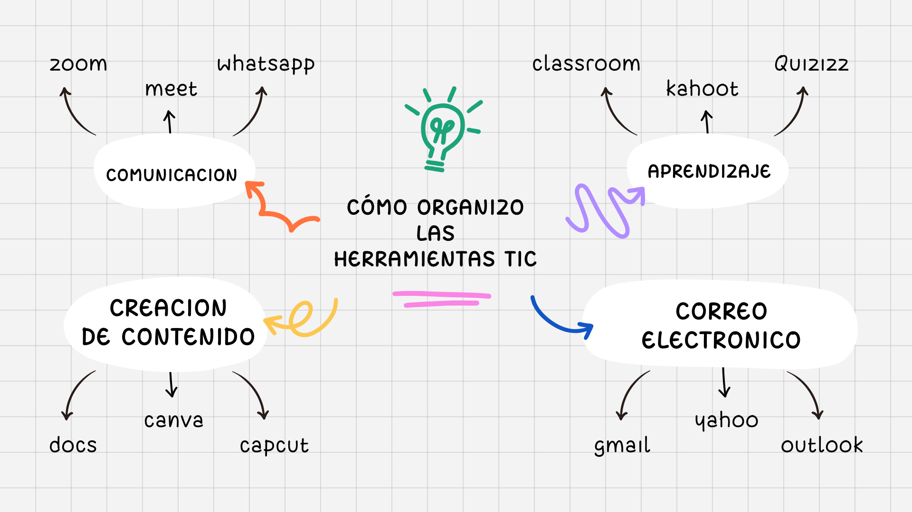

Educación Digital y Transformación Tecnológica
Explorando el futuro de la educación a través de las herramientas TIC. Un espacio para compartir conocimientos, experiencias y reflexiones sobre la integración tecnológica en el ámbito educativo.
¡Bienvenidos a mi espacio digital!
¡Hola! Soy Samuel Arias
Soy un apasionado de la educación digital y la transformación tecnológica. Este espacio nace de mi deseo de compartir conocimientos sobre las herramientas TIC que están revolucionando nuestra forma de aprender y enseñar.
Mi misión: Crear una comunidad de aprendizaje donde podamos explorar nuevas herramientas digitales, compartir experiencias y reflexionar sobre el futuro de la educación.
¿Qué encontrarás aquí? Recursos educativos, experiencias prácticas, análisis de herramientas TIC y mucho más contenido valioso para educadores y estudiantes.
Sobre Mí
Mi Perfil Profesional
Formación: Estudio en el Gimnasio Nicolas de Federman y recibo clases de programacion en el lenguaje python
Experiencia: Por 3 meses e trabajado para empresas de mi familia
Especialidades: Integración de TIC en educación, diseño instruccional, plataformas LMS, herramientas de evaluación digital
Intereses: Innovación educativa, gamificación, realidad virtual en educación, inteligencia artificial aplicada al aprendizaje
Propósito: Ayudar a educadores y estudiantes a aprovechar al máximo las herramientas tecnológicas para mejorar los procesos de enseñanza-aprendizaje.
🛠️ Herramientas TIC
Dominio de plataformas educativas, LMS, herramientas de videoconferencia y aplicaciones de productividad.
📚 Pedagogía Digital
Metodologías innovadoras para la integración efectiva de tecnología en el proceso educativo.
🎨 Diseño Educativo
Creación de contenidos multimedia, infografías y materiales didácticos digitales.
📊 Evaluación Digital
Implementación de sistemas de evaluación online y análisis de datos educativos.
Comic: "Las Aventuras del Profesor Digital"
Una historia sobre la transformación digital en la educación, contada a través de las experiencias de un profesor que descubre el poder de las herramientas TIC.
Reflexión sobre el Comic
Esta historieta representa el viaje de transformación que muchos educadores experimentamos al integrar las TIC en nuestras prácticas pedagógicas. El personaje del "Profesor Digital" simboliza esa evolución desde métodos tradicionales hacia enfoques más innovadores y tecnológicos.
Mensaje clave: La tecnología no reemplaza al educador, sino que amplifica su capacidad de impactar positivamente en el aprendizaje de sus estudiantes.
Mi Mapa Mental: Herramientas TIC para la Educación
🧠 MAPA MENTAL TIC
Mi Aporte sobre las Herramientas TIC
A través de mi exploración y experiencia con las tecnologías de información y comunicación, he desarrollado una comprensión profunda sobre su impacto transformador en la educación. Las TIC no son simplemente herramientas tecnológicas, sino catalizadores de cambio pedagógico.
🗣️ Herramientas de Comunicación
- Zoom, Google Meet - Videoconferencias
- WhatsApp, Telegram - Mensajería instantánea
- Slack, Discord - Comunicación grupal
- Flipgrid - Videos educativos
🎨 Herramientas de Creación
- Canva - Diseño gráfico
- Genially - Presentaciones interactivas
- Padlet - Muros colaborativos
- Kahoot - Gamificación
📊 Herramientas de Gestión
- Google Classroom - LMS
- Moodle - Plataforma educativa
- Trello - Gestión de proyectos
- Google Forms - Evaluaciones
📚 Herramientas de Contenido
- YouTube - Videos educativos
- Khan Academy - Cursos online
- Coursera - MOOCs
- Wikipedia - Investigación
💡 Mi Reflexión Personal
La verdadera transformación educativa no radica en la cantidad de herramientas que conozcamos, sino en nuestra capacidad para integrarlas de manera significativa y pedagógicamente coherente. Cada herramienta debe servir a un propósito específico dentro del proceso de enseñanza-aprendizaje.
Clave del éxito: La tecnología debe ser invisible al usuario final, facilitando el aprendizaje sin convertirse en una barrera u obstáculo.
✅ Proyecto Final: Aprendiz Digital
🎯 Resumen del Proyecto
Durante esta última fase del curso Aprendiz Digital, desarrollé dos actividades clave que consolidaron mi formación en competencias digitales y éticas para el uso responsable de las TIC.
👥 1. Trabajo en Equipo Virtual
En esta actividad reflexioné sobre los aspectos fundamentales de la colaboración en entornos digitales:
- Importancia de la colaboración: Cómo las herramientas digitales facilitan el trabajo conjunto sin importar la distancia
- Respeto por los tiempos: La puntualidad y cumplimiento de cronogramas en proyectos virtuales
- Distribución justa de tareas: Estrategias para asignar responsabilidades de manera equitativa
- Comunicación efectiva: Uso de canales apropiados y técnicas de comunicación clara y asertiva
🌐 2. Lineamientos para Socialización en la Red
Desarrollé un informe comprensivo sobre los principios éticos para una participación responsable en entornos digitales:
- Respeto digital: Mantener cortesía y consideración en todas las interacciones online
- Empatía digital: Comprensión y sensibilidad hacia otros usuarios en espacios virtuales
- Uso adecuado del lenguaje: Comunicación clara, respetuosa y apropiada para el contexto
- Protección de datos personales: Salvaguarda de información privada propia y ajena
- Veracidad informativa: Compromiso con compartir información verificada y confiable
💡 Reflexión e Impacto Personal
Estas actividades fortalecieron significativamente mi comprensión ética sobre el uso de las TIC y mejoraron mis habilidades para participar activamente en entornos de aprendizaje virtual. La experiencia adquirida se ve reflejada en este sitio web, donde he reunido todos los aprendizajes de forma organizada y visual.
🎯 Competencias Desarrolladas:
Habilidades para trabajar efectivamente en equipos virtuales
Comportamiento ético y responsable en entornos digitales
Técnicas efectivas de comunicación en medios digitales
Protección de información y privacidad en la red
🏆 Logro Alcanzado
Completé exitosamente el curso Aprendiz Digital, desarrollando competencias integrales en el uso ético y efectivo de las Tecnologías de la Información y Comunicación.
"Este sitio web es el producto final que demuestra la aplicación práctica de todos los conocimientos adquiridos durante el proceso formativo."
📊 Apropiación de las TIC en la Socialización Digital
🎯 Presentación Principal
Apropiación de las TIC en la Socialización Digital
📁 Archivo: Apropiacion_TIC_Socializacion.pptx
Haz clic en el botón de abajo para descargar la presentación completa
📋 Contenido de la Presentación
- Introducción a la socialización digital
- Importancia de las TIC en la comunicación
- Herramientas para la colaboración online
- Ética digital y netiqueta
- Casos prácticos y ejemplos
- Reflexiones y conclusiones
🎯 Objetivos Principales
- Analizar el impacto de las TIC en la socialización
- Identificar buenas prácticas digitales
- Promover el uso responsable de la tecnología
- Compartir experiencias de aprendizaje
- Fomentar la reflexión crítica
📖 Resumen Ejecutivo
Esta presentación aborda la apropiación de las Tecnologías de la Información y Comunicación (TIC) en el contexto de la socialización digital contemporánea. Se exploran los mecanismos mediante los cuales las herramientas digitales han transformado nuestras formas de interacción social, comunicación y construcción de conocimiento colectivo.
🔑 Puntos Clave Desarrollados:
📥 Descarga la Presentación
Accede al contenido completo de la presentación sobre apropiación de TIC en socialización digital
Recursos y Experiencias TIC
📝 Artículos y Reflexiones
"5 Herramientas TIC que Todo Educador Debería Conocer"
Un análisis detallado de las herramientas más impactantes para la educación moderna, basado en mi experiencia práctica y investigación.
Fecha: [Fecha actual] | Tiempo de lectura: 5 minutos
"La Educación Post-Pandemia: Lecciones Aprendidas"
Reflexiones sobre cómo la crisis sanitaria aceleró la adopción tecnológica en educación y qué lecciones podemos extraer para el futuro.
Fecha: [Fecha] | Tiempo de lectura: 7 minutos
"Tutorial: Implementando Gamificación en el Aula"
Guía práctica paso a paso para incorporar elementos de juego en las actividades educativas usando herramientas digitales.
Fecha: [Fecha] | Incluye: Video tutorial y recursos descargables
🛠️ Herramientas Recomendadas
⭐ Destacado: Padlet
Excelente para crear muros colaborativos y fomentar la participación estudiantil.
⭐ Destacado: Mentimeter
Perfecto para encuestas en tiempo real y hacer las clases más interactivas.
⭐ Destacado: Flipgrid
Ideal para que los estudiantes compartan videos y mejoren su expresión oral.
⭐ Destacado: Breakout EDU
Gamificación avanzada para crear experiencias de aprendizaje inmersivas.
Contacto
¿Tienes alguna pregunta, sugerencia o te gustaría colaborar? ¡Me encantaría escucharte!
🌐 Conecta conmigo
Email: [tu-email@ejemplo.com]
LinkedIn: [Tu perfil de LinkedIn]
Twitter: [Tu usuario de Twitter]
GitHub: [Tu perfil de GitHub]